设计模式
目录
1 OO 基本原则
S.O.L.I.D
- 单一职责原则
- 开放封闭原则
- 子类替换原则
- 接口隔离原则
- 依赖倒置原则
2 策略模式 行为型 对象
2.1 概述
定义一系列算法，分别封装起来，使它们之间可以相互替换。
2.2 适用性
- 一些 相关 的类接口一致，仅仅是行为有异
- 使算法使用的数据结构不暴露于客户
- 一个类定义了多种行为，且这些行为在类中是以多个条件语句的形式出现的
2.3 结构
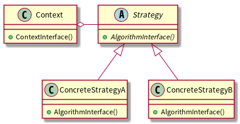
2.4 角色
Context
维护一个 Strategy 对象的引用
可开放接口，让 Strategy 访问其数据
2.5 优点
- 定义一组可供重用的算法（共通内容可放置于基类）
- 替代继承使用组合，更灵活，不用硬编码至 Context 中
- 消除条件语句
- 客户代码可以动态的选择具体算法
2.6 缺点
客户代码必须了解到具体算法之间的区别（增加耦合）
Gof 建议：仅当不同行为是与客户相关的行为有关时，才使用 Strategy 模式
Strategy 和 Context 之间的通信开销
各具体算法所需要的参数不一样，但是接口共享。导致需要额外增加两边接口，导致这两个类更紧密的耦合
增加了对象的数目
参考 Flyweight 模式
2.7 实现
2.7.1 需定义 Context 和 Strategy 之间数据交换的接口
方法一 Push：将数据作为参数放在 Strategy 的接口 AlgorithmInterface()中。
缺点：Context 可能发送一些 Strategy 不需要的数据。
方法二 Pull：Context 将自身作为参数传递给 Strategy，Strategy 再调用 Get 获取数据。
缺点：Context 必须为 Strategy 定义一堆更精细的 Get 接口。（C++中可使用友元）
2.7.2 将 Strategy 作为 C++模板参数
template <typename Strategy> class Context { private: Strategy theStrategy; public: void ContextInterface() {theStrategy.AlgorithmInterface()} };
- 不再需要 Strategy 抽象基类。
- 避免多态，使用模板在编译时就绑定 Strategy 和 Context，提高运行效率，牺牲了动态绑定的灵活性。
2.8 相关模式
3 状态模式 行为型 对象
3.1 概述
对象的行为随着内部状态的改变而改变。
3.2 适用性
- 一个对象的行为取决于它的状态，并且需要在 运行时 根据它的状态改变它的行为
- 大量的依赖于对象状态的分支 条件语句 是一个信号，通常可以用 State 模式进行改造。
3.3 结构
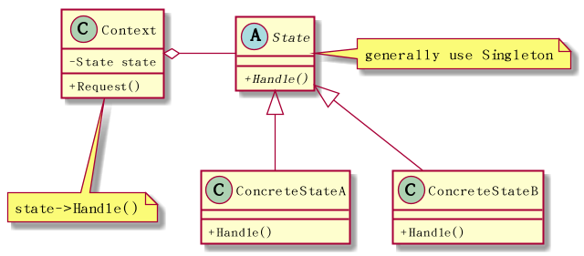
3.4 优点
- 易扩展新的状态，只需定义新的子类
State 对象可以被多个 Context 对象共享
条件：状态 对象 不能持有自己的状态实例。需要将状态实例指定到一个静态变量中(可用单件模式实现)
如果状态需要利用 Context 中的数据或方法，可在 Handle()方法传入 Context 的引用。
这种实现不再需要 State 类保存自身的引用，可实现没有内部状态只有行为的轻量级对象。
3.5 实现
3.5.1 谁定义状态转换
- 可由 Context 全权负责状态转移
通常由 State 具体类自身指定它们的后继状态更方便灵活
可以给 Context 增加一个接口，让 State 子类对象显式地设定 Context 的内部状态。
由 State 子类来指定状态转移的缺点是，增加了子类之间的依赖。
3.5.2 可使用表驱动法
- State 模式主要对状态相关的行为进行建模
- 而表驱动着重于定义状态的转换，通常表的 key 表示某一状态，Value 为它的后继状态。
3.6 相关模式
4 观察者模式 行为型 对象
4.1 概述
定义对象之间一对多的依赖，当一个对象状态发生变化时，所有依赖于它的对象都得到通知。
4.2 结构
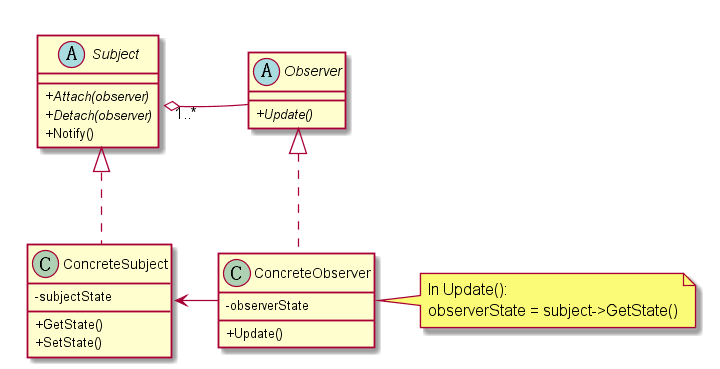
当一个观察者接收到改变指示后，流程图如下所示：
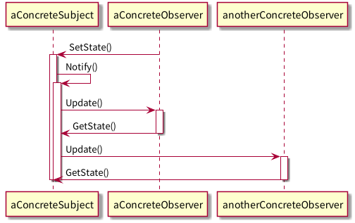
4.3 优点
Subject 和 Observer 间是抽象耦合
因为是非紧密耦合，Subject 和 Observer 可以来自于系统中的不同的抽象层次
低层次 Subject 一样可以通知高层次 Observer，使用该模式不会破坏系统层次
这就是抽象 Subject 和 Observer 的作用。
4.4 缺点
来自某一观察者的意外更新
某个观察者更新了主题的状态，导致其他观察者也发生了改变。
如果更新准则定义或维护不当，常常会引起错误的更新。
4.5 实现
4.5.1 主题与观察者的关联方式
- 主题跟踪观察者最简单的方式是保存观察者们的引用
- 另一种方式是维护一份主题与观察者之间的映射表
4.5.2 观察多个主题
某些情况下，观察多个主题是有意义的，例如：一个表格对象依赖于多个数据源。
需要扩展 Update 接口使观察者知道是哪一个主题送来的。
主题可以简单的将自己作为观察者 Update 接口的参数，让观察者知道应去检查哪一个目标。
4.5.3 谁触发更新
Notify 谁来调用？
- 由主题对象的状态设定操作自动调用。
- 优点：客户不需要调用 Notify。
- 缺点：多个连续的设定操作会产生多次连续更新，可能效率较低。(关键还是要看需求：在更新状态的时候是否需要通知)
- 客户负责调用 Notify
- 优点：客户可以在一系列状态设定操作之后一次性通知更新。
- 缺点：给客户增加了触发更新的责任。客户忘记的话，容易出错。
4.5.4 主题删除时，应通知观察者置空主题引用
4.5.5 在发出通知前，确保主题的状态自身是一致的
反例如下：
void MySubject::Operation (int newValue) { BaseClassSubject::Operation(newValue);//先触发了通知 _myInstVar += newValue;//后修改自身状态 }
可以使用模板方法发送通知来避免这种错误。(模板方法规定好修改状态和触发通知的顺序)
4.5.6 推拉模型的取舍
- 推模型(大多数情况使用它)
- Update 参数传入的信息可能有很多，并非是所有观察者都需要的。
- 主题对观察者所需要的信息的假定并不总是正确。
- 拉模型
- Update 传入主题的引用。
- 观察者自己向主题获取信息。
- 缺点：可能需要调用多个接口以搜集全观察者自己需要的状态。(耦合度增加)
4.5.7 只关注感兴趣的改变
扩展主题的注册接口，加入 interest 参数
//主题 void Subject::Attach(Observer*, Aspect& interest); //观察者 void Observer::Update(Subject*, Aspect& interest);
4.5.8 封装复杂的更新语义(ChangeManager)
当主题与观察者之间的依赖关系特别复杂时，
需要一个 ChangeManager 对象来维护这些关系。
目的：尽量减少观察者反映其主题的状态变化所需的工作量。
例子：如果一操作涉及到几个主题，就必须保证所有的主题都更改完了，再
一并通知它们的观察者。
该对象主要有 三个职责 ：
- 管理主题与观察者之间的映射表，提供接口来维护这个映射表。
- 定义一个特定的更新策略。
- 根据一个主题的请求，更新所有它的观察者。
4.6 扩展
4.7 相关模式
- ChangeManager 是一个 Mediator 模式的实例
- ChangeManager 通常是 Singleton 模式
5 模板方法 行为型 类
5.1 概述
最基本的设计模式，代码复用的基本技术
定义一系列算法的骨架，将其中的一些步骤延迟到子类中。
使子类可以不改变一个算法的结构，而重定义算法的某些特定步骤。
5.2 适用性
- 多个子类中存在一些公共行为，需要提取出来，做法如下：
- 识别代码中不同部分
- 提取出新的函数
- 用一个新的模板方法替换原算法(公共部分放于其中)
- 控制子类扩展，模板方法只在特定点调用子类方法
5.3 结构
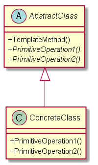
5.4 优点
提供了反向的控制结构。即"好莱坞法则"："别找我们，我们找你。"。
即高层组件调用低层组件，低层组件不能调用高层组件。
但并非低层组件一定不能调用高层组件，最重要的是避免让
高层组件和低层组件之间有明显的环状依赖。
- 一个模板方法整合了一系列操作，从而减少了需要客户程序调用的接口数。
- 客户代码只依赖于模板方法基类，不依赖于具体类，减少整个系统的 依赖 。
5.5 实现
hook operations 提供缺省1的行为，子类在必要时拓展。例如：
void AbstractClass::TemplateMethod() { Operation1(); Operation2(); Hook1(); if (HookFileExisted()) { Operation3(); } } bool AbstractClass::HookFileExisted() { return true; }
重要 ：模板方法应该指明哪些操作是钩子(可被重定义)，哪些操作是抽象操作(必须被重定义)。
可以做一个命名约定
需被重定义的操作加上前缀"Do"
钩子方法加上前缀"Hook"
5.6 相关模式
- Factory Method 常被模板方法调用。
- Strategy 使用委托来改变整个算法，模板方法使用继承来改变算法的一部分。
6 装饰者模式 行为型 对象
6.1 概述
动态地给一个对象添加一些额外的职责。提供了比继承更大的灵活2。
6.2 结构
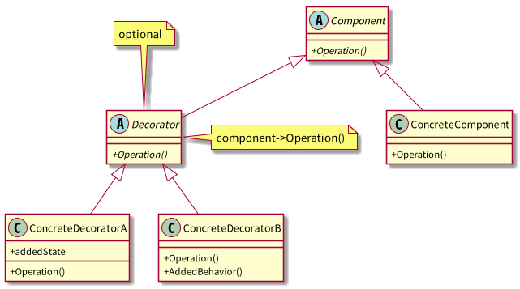
- 使用继承的目的是为了达到类型匹配，使用户在使用 Decorator 对象时，与使用 Component 一样。
6.3 优点
- 比静态继承更灵活，在运行时添加职责。
- 继承在添加一些共通职责时，容易产生类爆炸。Decorator 添加的职责大多数情况下能重用。
- 使结构层次较高的类更简洁。不依赖于现有已扩展的 Decorator 类，定义新类型的 Decorator 很容易。
6.4 缺点
- 使用装饰时不应该依赖于对象标识。被装饰了的组件与这个组件本身就对象标识而言，是有区别的。
- 产生很多小对象。对于不了解系统的人，难以学习，排错也比较困难。
6.5 实现
- 接口一致性。所有的 Component 和 Decorator 必须有一个公共的父类。
- 抽象的 Decorator 基类是可选的。仅需添加一个职责时，无需 Decorator 基类。
- 保持 Component 类的简单性。公共父类仅定义接口，尽量避免加入子类并不需要的职责。
6.6 相关模式
6.6.1 与 Strategy 的比较：
- Decorator 可看做一个对象的 外壳 。
Strategy 则是改变对象的内核。
当 Component 基类很 庞大 时，使用 Decorator 代价太高，Strategy 模式更好一些。
比如，绘制边框的职责，既可以使用 Decorator 模式包一层外壳，
也可以使用 Border 对象专门负责，再组合进 Context。
6.6.2 Composite 模式
可以将装饰视为一个退化的、仅有一个组件的组合。
另外，它的目的在于添加职责，而 Composite 目的在于对象聚合。
7 单件模式 创建型 对象
7.1 概述
保证类仅有一个实例，并提供该实例的全局访问点。
7.2 适用性
- 当类只能有一个实例
- 当这个唯一实例需要通过子类化扩展
7.3 结构

7.4 优点
- 受控访问
起到命名空间的作用
对全局变量的一种改进，全局变量会污染名空间(容易重名)。
支持静态类的语言，使用静态类解决该问题更简单。
- 可以被 继承 扩展。
可扩展单例为 多个实例
允许 Singleton 类可以管理多个实例（池类技术）。
7.5 实现
class Singleton { public: static Singleton* GetInstance(); protected: Singleton() : _instance(NULL);//隐藏的构造函数 private: static Singleton* _instance; }; Singleton* Singleton::GetInstance () { if (_instance == NULL) _instance = new Singleton; return _instance; }
7.5.1 同步问题
为了保证在多线程环境下只创建一个实例，需要对 GetInstance 方法做同步处理。
简单的方法：直接将 GetInstance 方法声明为 synchronized。
这样的做法有个问题：
我们需要同步的只是 GetInstance 内部负责创建实例的区块，
对整个函数进行同步，如果函数体内内容较多且外部调用很频繁，
开销会很大。
应该只同步创建实例的区块(java 示例)：
public class Singleton { private static Singleton uniqueInstance; private Singleton() {} public static Singleton GetInstance() { if (uniqueInstance == null) { //判断是否要进入负责创建实例的同步模块 synchronized (Singleton.class) {//仅一个线程执行此区块，确保只创建一个实例。 if (uniqueInstance == null) { uniqueInstance = new Singleton();//对于同步数据，当你的写入依赖于读取的内容的时候，要小心。 } } } return uniqueInstance; } }
7.5.2 继承问题
问题：子类的单件实例化在何处实现？
在父类的 GetInstance 中决定使用哪一个单件子类。
可以传入参数，使用条件语句在运行时期选择适合的子类。
局限在于硬性限定了可能的 Singleton 子类的集合。
优点：支持多态，运行时指定子类。
将 GetInstance 类从父类中剥出，并将它放入子类。
客户代码通过类名调用 GetInstance 自行决定使用哪个子类。
编译时决定使用哪个子类，非运行时，不够灵活。
使用设定文件(或注册表等)记录单件类。
GetInstance()读取相关配置项，通过映射表找到相对应的单件类。
7.6 与静态类比较
7.6.1 概念上的理解
静态类是单件模式的一种特殊实现方式。
- 静态类更多的用于与特定实例无关的 全局 属性和 全局 方法的分类(起到命名空间的作用)。
- 而单件的概念是确实需要一个实例，而且实例只能有一个。比如：注册表对象，线程池对象。
7.6.2 创建的时间
- 静态类在编译时创建
- 单件模式的类在运行时创建(创建的时机在一定程度上可选)
7.6.3 扩展性
- 静态类不能被继承，也无法继承其他类。(如果该类需要实现一些接口，则不能使用静态类)
- 单件类可以被继承扩展
- 如需要从一个实例变为多个实例，静态类做不到。单件类可以扩展满足要求 更灵活
7.6.4 总结
- 静态类更多地用于对全局方法、全局变量的分类组织。
- 单件模式表示有且仅有一个对象。单件类可以被继承，易于扩展。
当对于是否使用单件模式没把握的时候，使用单件类更好一些。
原因：静态类改成实例类，会改变接口，从而影响所有的客户代码。
7.7 相关模式
经常使用 Singleton 模式的其他模式：
- Abstract Factory
- Builder
- Prototype
8 工厂模式 创建型 对象
8.2 工厂方法
8.2.1 概述
定义一个用于创建对象的接口，让子类决定实例化哪个产品。
8.2.2 结构
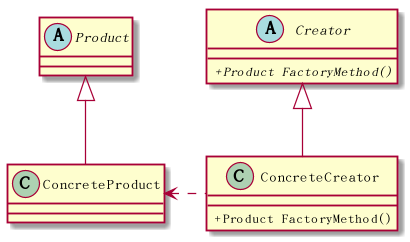
8.2.3 实现
避免子类化
工厂方法一个潜在的问题是它们可能仅为了创建适当的 Product 对象
而迫使你创建 Creator 子类，C++中可以提供使用模板避免子类化。
class Creator { public: virtual Product* Create() = 0; }; template <class T> class StandardCreator : public Creator { public: virtual Product* Create(); }; template <class T> Product* StandardCreator<T>::Create() { return new T; }
8.2.4 相关模式
- Abstract Factory 经常使用工厂方法来实现。
工厂方法通常在 Template Method 中被调用。
模板方法指定一系列的具体步骤，而创建对象的一步委托给工厂方法。
Prototype 不需要创建 Creator 的子类。
但会要求一个针对 Product 类的 Initialize 操作。Creator 使用 Initialize 来初始化对象。
与简单工厂方法的比较
简单工厂在 SimpleFactory 的 create 方法中，使用类似 Switch 语句来根据参数制造产品。
缺点在于，switch 不容易扩展，并且 SimpleFactory 需要知道所有的产品类，耦合紧密。
8.3 抽象工厂
8.3.1 概述
提供创建一系列产品族的接口，而无需指定各产品的具体类。
8.3.2 角色
ConcreteFactory
负责创建各产品对象，每一个具体工厂类都代表一种产品之间的组合。
8.3.3 结构
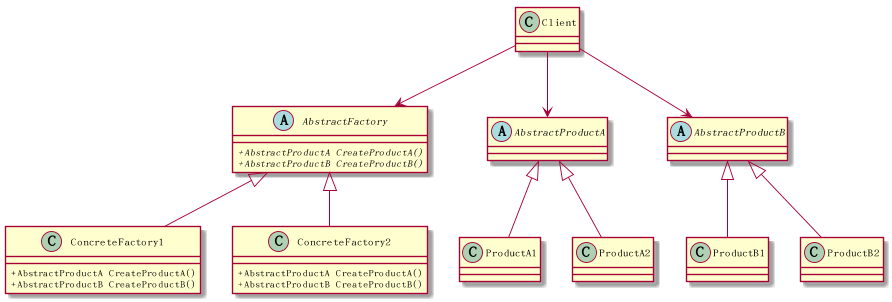
8.3.4 优点
使得易于交换产品系列
通过替换具体的工厂类，来改变产品系列。
有利于产品的一致性
当一系列产品被设计成一起工作时，抽象工厂可以保证一个应用一次只能使用同一系列的对象。
8.3.5 缺点
难以支持新种类的产品
AbstractFactory 接口定义了可以被创建的产品集合。支持新的产品种类，
就需要扩展接口，还涉及到所有子类的改变。解决办法
8.3.6 实现
将具体工厂作为单件
一般每个产品系列只需一个 ConcreteFactory 的实例。
创建产品。
AbstractFactory 只声明创建产品的接口。
如果有多个可能的产品系列，具体工厂也可以使用 Prototype 模式来实现。
具体工厂使用产品系列中每一个产品的原型实例来初始化，
且它通过复制它的原型来创建新的产品。
基于原型的好处：不是每个新的产品系列都需要一个新的具体工厂类。
定义可扩展的工厂
加入新产品需要扩展接口，影响子类。
一个更灵活但不太安全的设计是给创建对象的操作增加一个参数。
AbstractFactory 只提供一个 Create 操作，用参数指定要创建的产品。
由于产品种类各不相同，此方法只适用于动态类型语言。
当所有对象都有相同的基类，且产品对象可以安全的强转成正确的
类型时。才能在 C++这样的静态类型语言中使用。
此方法有个本质的问题，因为返回的都是 Object 基类，客户无法区分
或对一个产品类别进行安全的假定。需要 dynamic_cast 去转换，这种
自上向下类型的转换并不总是安全的。
总结：这是一个典型的高度灵活和更高安全性的权衡问题。
9 命令模式 行为型 对象
9.1 概述
将请求封装成对象，实现统一的 Execute()接口，从而可以使用不同的请求
实例对其他对象进行参数化。
典型的例子：
Button 控件，对控件设计者来说，只知道 Button 按下应该会发生
些什么，但具体会发生什么一无所知。只能由使用者来决定。
9.2 适用性
- 回调机制 的一个面向对象的替代品
- 支持对请求排队
支持撤销操作
Excute()在实施操作前记录状态，Undo()利用该记录状态取消之前执行的操作。
将执行完的命令对象加入一个历史列表，可通过 向前/向后遍历 实现
一系列的 Undo/Redo 。
命令对象支持 持久化
方法：添加 Store()和 Load()接口
在执行一些列命令前，调用 Store()对命令对象进行序列化和持久化操作。
一旦系统崩溃，可以使用 Load()复原命令对象，并重新执行。
- 支持事务处理
9.3 结构

9.4 角色
Client
负责创建具体命令对象并指定它的接收者。
存储命令对象到某个媒介。
- Invoker 从存储媒介中获取命令对象，并执行。
9.5 优点
- 增加新的 Command 很容易。
- 将调用命令的对象与知道如何实现该命令相关操作的对象解耦。
- Command 对象和其他对象一样支持扩展。
- 支持 MacroCommand。复合命令是 Composite 模式的一个实例。
9.6 实现
- 一个命令对象职责可大可小。
- 最小职责仅确定一个接收者和执行该请求的动作
- 职责也可以大到负责处理所有的功能，不需要接收者，直接包含具体动作。(当没有合适的接收者时使用)
实现 undo 和 redo
ConcreteCommand 类需要存储额外的状态信息，包括：
- 接收者对象
- 接收者接口执行操作的参数
- 接收者的状态值
使用 C++模板
好处：避免每一个动作和接收者都创建一个 Command 子类。
问题：1) 不支持撤销操作 2) 无法向接收者的执行接口传入参数
9.7 相关模式
- Composite 可被用来实现宏命令。
- Memento 模式可用来保持一个状态，命令对象用该状态来取消之前执行效果。
10 适配器模式 类 对象 结构型
10.1 概述
将一个或多个类的接口转换成用户希望的接口。别名 Wrapper。
现有类的接口与用户希望的接口通常是固定的，无法改变。
10.2 结构
10.2.1 类适配器

10.2.2 对象适配器
将 Adapter 与 Adaptee 之间的继承关系变为了组合。

10.3 角色
- Target 定义了满足用户需要的接口
11 代理模式 对象 结构型
11.1 概述
控制和管理访问
11.2 适用性
- 远程代理 代理类隐藏网络层的实现，本地调用代理类就如同调用本地对象一样。
- 虚代理 创建开销很大的对象时使用。代理类隐藏创建的细节。
- 保护代理 用于权限控制。
- 智能指针
11.3 结构

11.4 角色
Proxy
控制对实体的存取，并可能负责创建和删除实体。
Subject
定义 RealSubject 与 Proxy 的共用接口。
11.5 实现细节
11.5.1 C++通过重载->,*运算符实现
Image* ImageProxy::operator-> () { return LoadImage(); } Image& ImageProxy::operator* () { return *LoadImage(); } int main() { ImageProxy imageptr; imageptr->Draw();//此处实际调用的是 Image 的方法 (*image).Draw(); return 0; }
11.5.2 远程代理
远程代理不一定都是通过网络调用的，不同地址空间的对象访问也是远程代理。
远程代理一般需要将对象、调用信息序列化，通过 Socket 等协议，通知远程的
服务，然后有远程提供服务的程序，调用实体对象。
Java 中有成套的解决方案，叫做 RMI。
11.5.3 智能指针
- 对指向实际对象的引用计数，引用计数为 0 时，自动释放。
- 第一次引用时，装入内存。
- 访问实际对象前，检查被锁定。
标准库的例子：
#include <memory> using namespace std; class A {}; void f() { auto_ptr<A> ptr(new A);//栈区对象，出栈时释放指针，避免多个函数出口都写释放语句 try { //delete a; return; } catch (...) { //delete a; } //delete a; }
11.5.4 虚代理
对于一些开销很大的对象，可能在实际真正用到的时候，才创建对象。
例如：ImageProxy 构造中什么都不做，而在 Draw 的接口中，才真正创建 Image 对象。
12 外观模式 对象 结构型
12.1 概述
为子系统中的一组接口进行简化，提供一组高级接口，使得子系统更加容易使用。
12.2 适用性
- 为复杂子系统提供一个简单接口，对大部分用户来说足够用，必要时用户一样可以绕过该接口。
- 使客户程序从子系统的各层次实现的细节中解脱出来。
- 多层次结构，可以使用 Facade 模式定义每一层的抽象操作。可以让各层次之间通过 facade 进行通信，简化了各层次之间的依赖关系。
12.3 结构

12.4 优点
- 实现了用户与子系统之间的 松耦合 关系
- 对用户屏蔽子系统结构，更易用
12.5 实现细节
- 使用抽象类实现 Facade 可以进一步降低客户与子系统的耦合度。
- C++使用 Namespace 可以私有化子系统中的类。
12.6 相关模式
- Abstract Factory模式可与 Facade 模式一起使用以提供一个单独的创建产品簇的接口。
- Mediator 模式与 Facade 模式的相似之处：都抽象了一些已有的类的功能。但 Mediator 的目的是对同级之间的任意通讯进行抽象。
- 通常来说仅需要一个 Facade 对象，所以 Facade 类定义成 Singleton 类。
13 迭代器模式 对象 结构型
13.1 概述
提供遍历集合对象中各元素的方法，并且不将集合具体的数据结构暴露给用户。
13.2 适用性
- 遍历访问集合对象的内容，无需暴露它的内部结构。
- 支持对同一集合对象的多种遍历方式。
- 为遍历不同数据结构的集合对象提供统一的接口(即支持多态迭代）。
13.3 结构

13.4 角色
Iterator
定义访问和遍历元素的接口
- ConcreteIterator
- 实现 Iterator 定义的接口
- 在遍历集合时，跟踪当前位置
Aggregate
定义创建迭代器对象的接口
ConcreteAggregate
实现 Aggregate 定义的接口
13.5 优点
- 支持以不同的方式遍历一个集合，使改变遍历算法变的容易。
- 迭代器将遍历的职责从集合类中剥离出来。维护起来更容易。
- 可以同时对一个集合进行多个遍历，只需多个迭代器实例对象。
13.6 实现细节
13.6.1 由谁来控制迭代过程？
13.6.2 谁定义遍历算法？
由集合自身定义
由集合自身定义遍历算法。迭代器仅用来指示当前的位置。这种迭代器称为 游标 。
客户调用 Next()时，需要将游标作为参数传入，Next 操作内部仅改变游标的位置状态。
可改接口为 SetCursor(index)和 int GetCursor()更容易理解。
由迭代器定义
遍历算法还可以由迭代器定义，优势在于，使得在相同的集合上使用不同的迭代算法、
或是在不同的集合上使用相同的迭代算法更简单。
注意：如果遍历算法会用到集合的私有变量，放在迭代器中，则破坏了集合对象的封装性。
13.6.3 线程安全的迭代器
现实情况下，可能有多个不同线程创建的迭代器引用同一个集合对象。
解决同步问题的一般做法是：
各迭代器对象需要向集合对象进行注册(可用4模式)，
当改变发生时，集合对象更新每一个迭代器的状态。
13.6.4 关于多态迭代器
结构图中所展示的是多态迭代器的实现
也可以不需要迭代器抽象基类，这样在 工厂方法 CreateIterator 中
也就不需要动态 new 出迭代器具体类对象。
多态迭代器是有代价的
因为 动态 的分配迭代器对象的本身是有代价的。
一般情况使用分配在栈区上的具体迭代器即可。
多态意味着需要用 new，也就需要用户负责删除它们，这样容易引发错误。
可以使用11模式，在栈区创建一个代理迭代器对象，在代理迭代器析构中
释放具体迭代器对象。不能用工厂是因为工厂只负责对象的创建。
IteratorProxy::IteratorProxy(Type type) { if (type == Type.Reverse) Iterator* m_iter = new ReverseIterator(); ...; } IteratorProxy::~IteratorProxy() { delete m_iter; } int main() { IteratorProxy iter(Type.Reverse); iter.next(); ...; return 0; }
- 仅在必须要使用多态时才使用。
13.6.5 迭代器与集合的紧密耦合
迭代器一般作为集合的一个扩展，两者之间是紧密耦合的。
13.6.6 与16模式的协作
13.6.7 空迭代器
用于处理边界条件。
一个 NullIterator 的 IsDone()总是返回 true，或者 HasNext()总是返回 false。
提示：
空迭代器更多的用于处理树形结构的集合。
叶结点通常需要一个 NullIterator。
13.7 相关模式
- 迭代器可在Composite模式这样的递归结构上使用。
- 多态迭代器可以通过Factory Method模式来实例化迭代器子类。
- 迭代器可使用一个 memento 来捕获一个迭代状态，即迭代器内部存储 memento。
14 桥接模式 对象 结构型
14.1 概述
分离抽象部分与实现部分，使得抽象部分也能被改变。
14.2 适用性
- 多用于需要跨多个平台的 GUI 部分。
14.3 结构
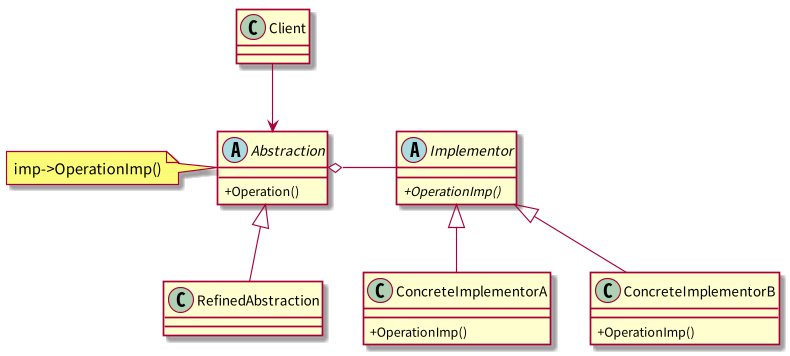
14.4 优缺点
14.4.1 优点
- 将实现解耦，不再与界面(接口)绑定死。
- 接口也可独立扩展。
- 对接口扩展也不会影响到现有客户。
14.4.2 缺点
- 增加架构复杂度
14.5 实现细节
14.5.1 Implementor 具体对象的创建
- 可由 Abstraction 的构造方法的参数，在构造中确定创建哪个对象。
- 可提供缺省的创建，根据需要改变具体对象。
代理给其他对象，由其他对象来决定。
比如，由一些 factory 对象来决定，可以使 Abstraction
和 Implementor 对象彻底解耦。
14.6 相关模式
Adapter 通常在系统设计完成后才会被使用，Bridge 则在系统设计开始
时就被使用，它使得抽象与实现可以独立的进行改变。
15 生成器模式 创建型 对象
15.1 概述
将一个复杂对象的创建过程封装起来，提供接口创建复杂对象的各部件。
15.2 结构
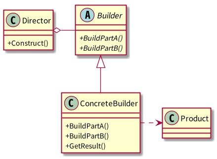
15.3 角色
Builder
为创建一个 Product 对象的各个部件指定抽象接口。
- ConcreteBuilder
- 实现 Builder 的接口以构造和装配该产品的各个部件
- 定义产品的内部表示，及其各部件的装配过程
- 提供一个检索产品的接口 GetResult
Director
构造一个使用 Builder 接口的对象
15.4 流程图
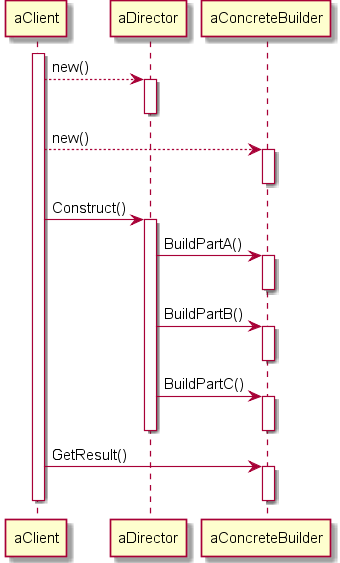
15.5 效果
- 只需定义一个新的生成器就可以改变产品内部表示
- 创建与表示分开，客户无需知道产品内部的部件类
15.6 实现
产品不是抽象类？
通常具体生成器生成的产品之间相差很大，不太可能有公有接口。
- 通常缺省 BuildPart 方法什么也不做，但非纯虚方法
15.7 相关模式
- Abstract Factory着重于多个系列产品对象，生成器专注于创建复杂对象，最后一步才返回产品。
- Composite通常是用 Builder 生成的。
16 组合模式 结构型 对象
16.1 概述
将对象组合成树形结构，表现出“整体/部分”的层次。
用户对于单个对象的使用和组合对象的使用具有一致性。
16.2 结构
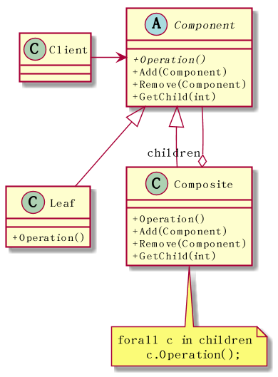
16.3 角色
- Component
- 声明组合和叶对象的一致操作 Operation。
- 在适当情况下，实现所有类的默认行为。
- 声明用于访问和管理 Component 子部件的接口。
- Composite
- 实现有子部件的 Operation 行为。
- 存储子部件。
- 实现访问和管理子部件的接口。
16.4 优点
简化客户代码，客户可以一致的使用组合对象和叶对象。
用户不关心是何种对象，也就不需要写一些选择语句。
- 容易增加新类型的组件。
16.5 实现
子部件可保存父部件的引用。
父部件引用也支持17。
父部件引用一般定义在 Component 类中。
- 共享组件，可减少对存储的需求。
透明性与安全性的权衡
如需更多的透明性，将操作子部件的 Add 操作和 Remove 操作在 Component 类中定义。
如需更高的安全性，将这些操作在 Composite 类中定义。安全性会需要用到类型转换。
存储子结点的引用集合
对于叶结点而言，会有一定的空间浪费，需考虑。
子部件顺序问题
有时候子结点的顺序可能是有意义的。比如语法分析树。
这时候需要仔细设计对子结点的访问和管理接口，可使用 Iterator 模式。
- Composite 存储子结点的数据结构是可选的
16.6 相关模式
- 部件到父部件的连接使用Chain of Responsibility
- Decorator与 Composite 模式很像，事实上他们经常可以一起使用。
- Flyweight 可以帮助实现共享组件。
- Iterator可用来遍历 Composite 子部件。
17 责任链模式
17.1 概述
使多个对象都有机会处理请求，将这些对象连成一条链，沿着该链传递该请求，
直到有对象处理该请求为止。
通俗点讲，每个处理对象能处理请求就处理掉，否则就扔给下一个处理对象。
17.2 结构
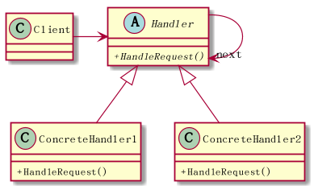
17.3 适用性
- 经常被用来处理鼠标键盘事件。
- 过滤器的实现可参考责任链模式。
17.4 优点
降低耦合度
请求者不关心谁处理了请求。责任链中对象也无需知道链结构。
- 可以动态地增加修改 Handler 对象
17.5 缺点
- 不保证请求一定会被处理。
- 不容易观察运行时特征，不利于除错。
17.6 实现
17.6.1 后继者实现
通常 Handler 类维护后继者链接，并提供默认实现向后继者转发请求。
如果 ConcreteHandler 类对该请求不感兴趣，它只需要用到默认实现转发请求即可。
17.6.2 请求的表示
单一类型请求
通过一个 hard-coded 操作调用，这种方式方便安全。
多个类型的一组请求
处理函数参数需要一个请求码，用条件语句区分请求码以分派请求。
- 使用独立的请求对象
17.6.3 终极 Handler
责任链不保证请求一定会被处理，可以在最后加个终极处理器处理这种情况。
17.7 相关模式
责任链通常与Composite一起使用。一个部件的后继者可以是它的父部件。
子部件能处理则处理，不能处理则一层层交由父部件处理。
18 一些 OO 提示
18.1 活用空对象来避免 null 值检查
class Object { public: vitual void DoSomething() = 0; }; class NullObject : public Object { public: void DoSomething(); }; void NullObject::DoSomething() { //do nothing }